pacman::p_load(# Data manipulation and importation asaur, # for data set pancreatic tidyverse, purrr, haven, showtext, # fonts# Survival analyis survival, flexsurv, survminer, cmprsk, # competing risks mstate, # multi-state models# Data visualization ggplot2, ggsurvfit, modelsummary, kableExtra, knitr, DT, # tables gt #tables)
The data used in this review is simulated data from 14,294 prostate cancer patients from Lu-Yao et al. study https://quarto.org (DOI:10.1001/jama.2009.1348). It has the following five variables:
Variables
Variable
Description
grade
The grade of prostate cancer (moderately differentiated, poorly differentiated).
stage
The stage of prostate cancer (T1c if screen-diagnosed using a prostate-specific antigen blood test, T1ab if clinically diagnosed without screening, or T2 if palpable at diagnosis).
ageGroup
The age of diagnosis (e.g., 80+, 75-79, 70-74).
survTime
Survival time in months.
status
The status indicator (0 = censored, 1 = died of prostate cancer, 2 = died of some other cause).
died
A binary variable indicating whether the patient died or not.
14.2 Kaplan-Meier and non-parametric tests
Let’s start by estimating the Kaplan-Meier survival curve for the prostate cancer patients. The Kaplan-Meier estimator is a non-parametric method used to estimate the survival function from lifetime data. The survival function is defined as the probability that an individual survives from the time of entry into the study until a specified time point. We fit the Kaplan-Meier estimator for the prostate cancer patients and plot the survival curves by age of dyagnosis.
Warning: The `size` argument of `element_rect()` is deprecated as of ggplot2 3.4.0.
ℹ Please use the `linewidth` argument instead.
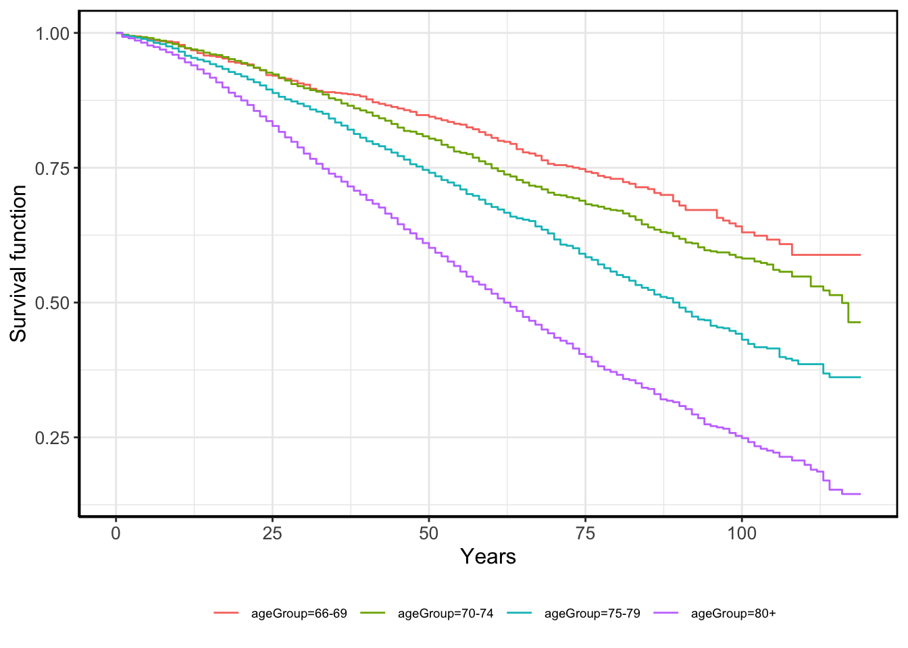
Figure 14.1: Kaplan-Meier plot
In figure Figure 14.1 we can see that the survival probability decreases with age of diagnosis.
Adding confidence intervals is a way to visually assess the uncertainty in the survival estimates.
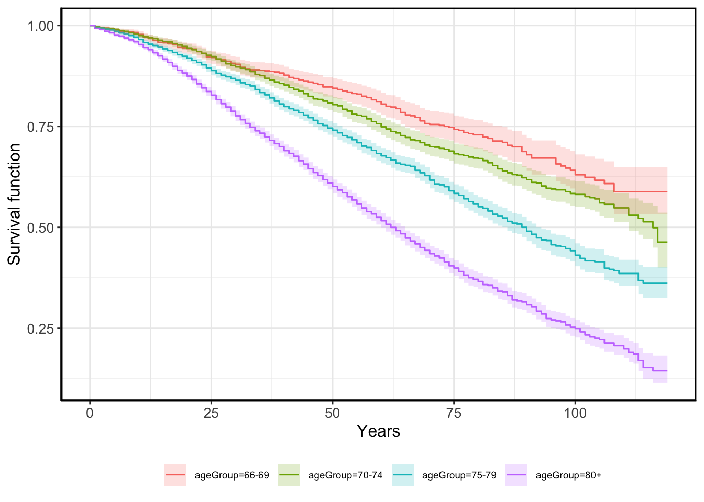
Figure 14.2: Kaplan-Meier plot with confidence intervals
Figure Figure 14.2 shows the Kaplan-Meier plot with confidence intervals. From that the survival curves for the two oldest age groups are separated from the other while the two younger groups confidence intervals seem to be overlapping a little.
We can also perform the log-rank test and the Wilcoxon test to compare the survival distributions of the two groups.Both of these are non-parametric tests used to compare the survival distributions of two groups.
Log-rank and Wilcoxon test
Test
Statistic
P_value
Log-rank test
608.27
0
Wilcoxon test
551.28
0
The log-rank test and the Wilcoxon test both tell us that there is a significant difference in survival between age groups.
14.3 Cox proportional hazards model
Another way to compare survival between groups is to use a Cox proportional hazards model. The Cox proportional hazards model is a semi-parametric model used to estimate the effect of covariates on survival time. It assumes that the hazard ratio is constant over time.
Cox Proportional Hazard model 1
coef
exp(coef)
se(coef)
Pr(>|z|)
0.199
1.221
0.077
0.01
0.563
1.757
0.072
0.00
1.084
2.958
0.069
0.00
The Cox proportional hazards model shows that the hazard ratio is significantly higher for all groups compared with the youngest group (66-69). For the 70-74 age group the hazard is 1.2 times higher. For 75-79 age group the hazard is 1.75 times higher. For the oldest group (80+) the hazard is almost 3 times higher. When using estimating a Cox proportional hazards model one can also use other covariates to estimate the hazard ratio.
Cox Proportional Hazard model 2
coef
exp(coef)
se(coef)
Pr(>|z|)
0.199
1.220
0.078
0.01
0.555
1.743
0.072
0.00
1.029
2.798
0.070
0.00
0.471
1.602
0.035
0.00
-0.453
0.636
0.042
0.00
-0.156
0.856
0.037
0.00
In this model we’ve added the grade and stage covariates. from the results we see that the hazard ratio for patients with poorely differentiated cancer is 1.6 times higher than for patients with moderately differentiated cancer. The hazard ratio for patients with stage T1c and T2 cancer is lower than for those with stage T1ab cancer.
We can also take a look at the partial residuals plot of each of the covariates in the model. The partial residuals plot shows the effect of each covariate on the survival function while adjusting for the other covariates in the model.
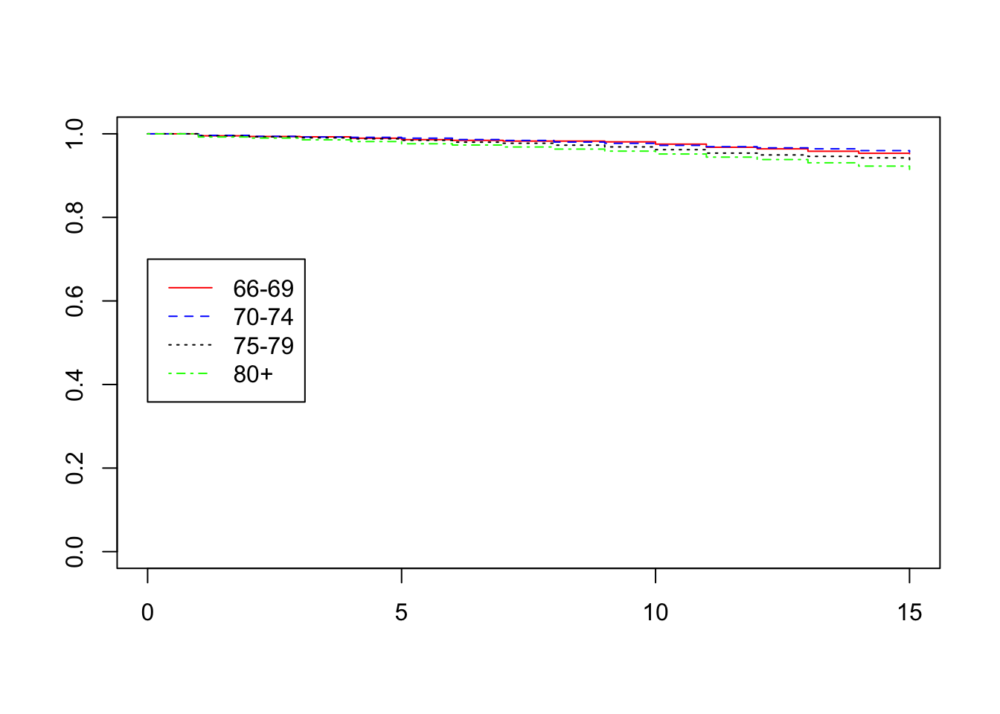
Figure 14.3: Partial residuals plot 1
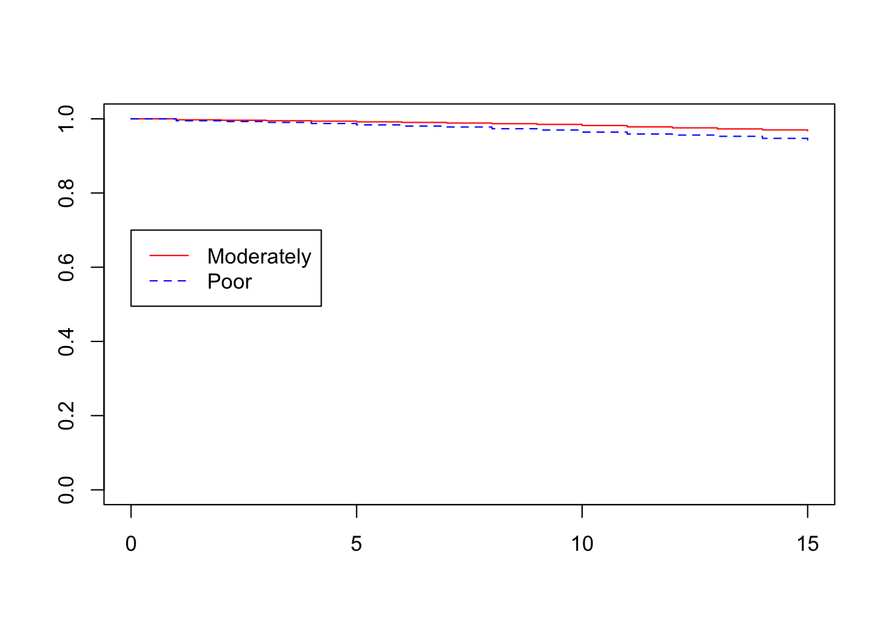
Figure 14.4: Partial residuals plot 2
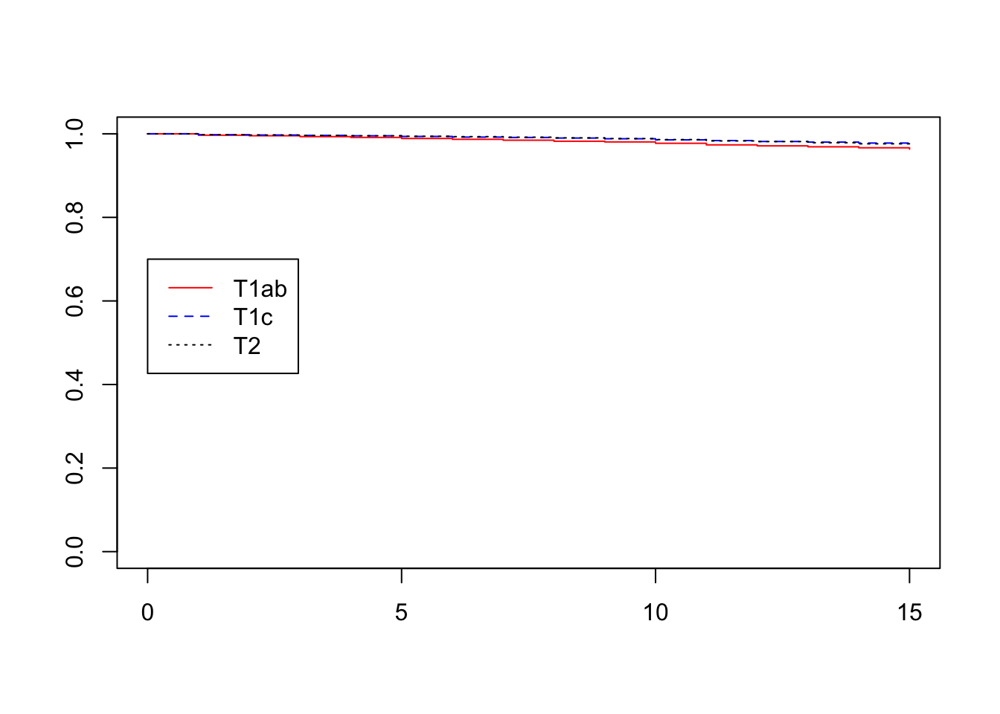
Figure 14.5: Partial residuals plot 3
14.3.1 Cox proportional hazards model assumptions
Next step in our analysis is to assess the validity of the model by using diagnostic plots in order to understand whether the underlying assumptions needed for this model are met. It is also a way to understand whether this model is appropriate for our data at hand. One of the assumption of a Cox proportional hazards regression model is that the hazards are proportional at each point in time throughout follow-up and this is what we will try to investigate.
First we look at the log(-log(survival)) plot to check for deviations from the proportional hazards assumption in the first Cox model we made.
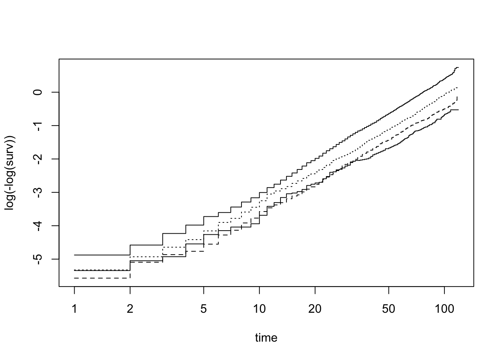
Figure 14.6: Deviations from the proportional hazards assumption (sex)
Figure 14.6 shows that the lines are fairly but not perfectly parallel. This indicates that the proportional hazards assumption may hold for age group.
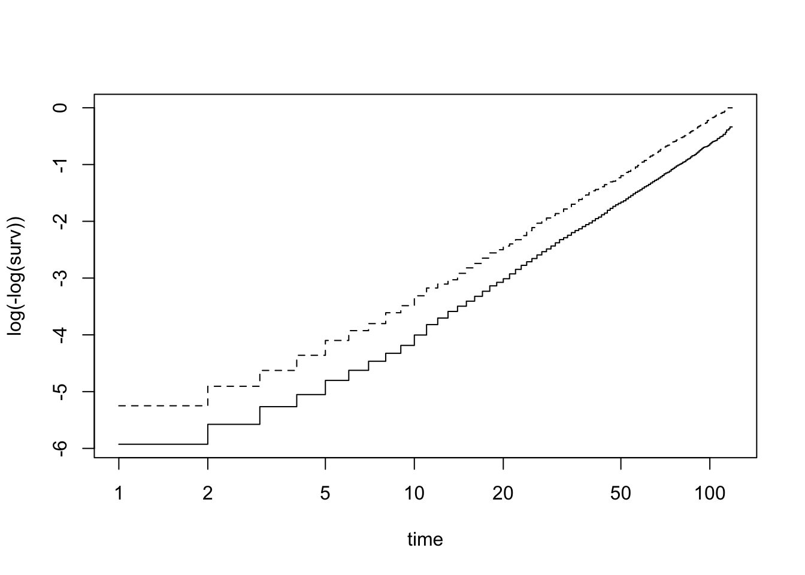
Figure 14.7: Deviations from the proportional hazards assumption (sex)
Figure 14.7 shows that the lines are parallel all the time. This indicates that the proportional hazards assumption may hold for age group.
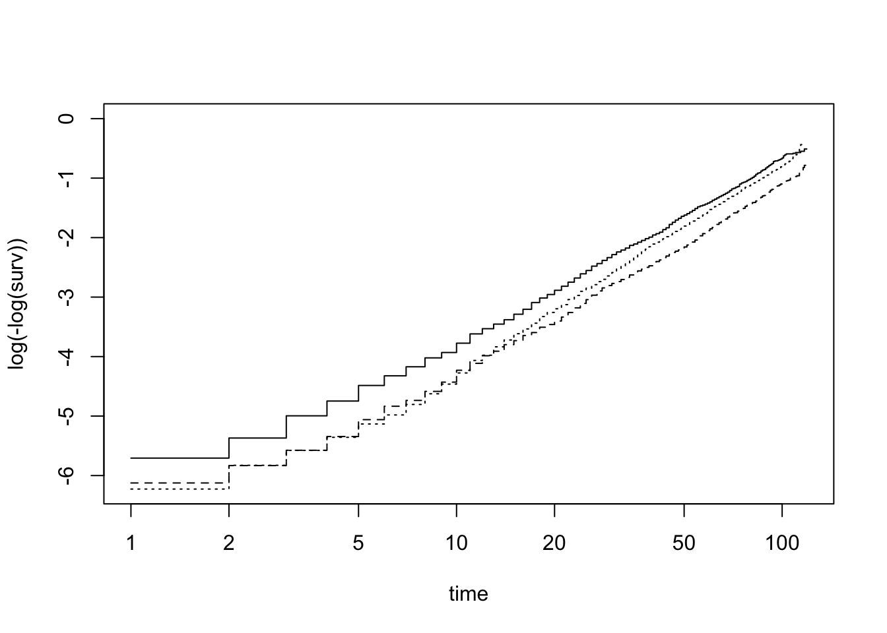
Figure 14.8: Deviations from the proportional hazards assumption (sex)
Figure 14.8 shows that the lines are fairly but not perfectly parallel. This indicates that the proportional hazards assumption may hold for age group.
We now do a hypothesis test of whether the effect of each covariate differs according to time, and a global test of all covariates at once. This is done by testing for an interaction effect between the covariate and log(time). A significant p-value indicates that the proportional hazards assumption is violated. This is presented in the table below.
Schoenfeld test for proportional hazards assumption
variable
chisq
df
p.value
ageGroup
8.900394
3
0.0306449435
grade
3.639644
1
0.0564189807
stage
10.383688
2
0.0055617419
GLOBAL
25.536440
6
0.0002715458
Test of proportional hazard assumption
From the test we can see that age group has a p-value < 0.05 which indicates that the proportional hazards assumption may be violated. For grade the null of no violation of the proportional hazards assumption cannot be rejected. Stage has a p-value < 0.05 which indicates that the proportional hazards assumption may be violated. The global test for all covariates also has a p-value < 0.05 which indicates that the proportional hazards assumption is violated and that the null of no violation of the proportional hazards assumption should be rejected.
To investigate further we want to look at the plots visualizing the scaled Schoenfeld residuals over time.
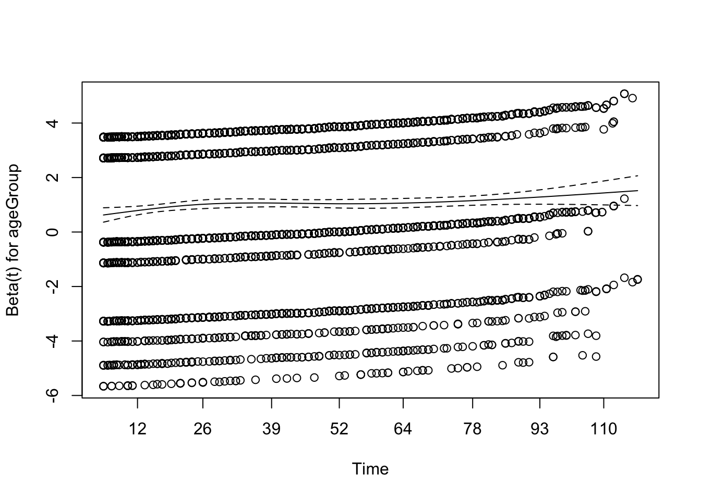
Figure 14.9: Schoenfeld residuals over time (age group)
Plots of the Schoenfeld residuals Deviation from a zero-slope line is evidence that the proportional hazards assumption is violated. One should note though that the violation of the proportionality assumption doesn’t necessarily mean the model is invalid since the violation might only be present for some subset of the population. In Figure 14.9 we see that the line is not straight (it looks as if it has a polynomial shape) which implies non-proportionality in the form of a rising hazard ratio over time.
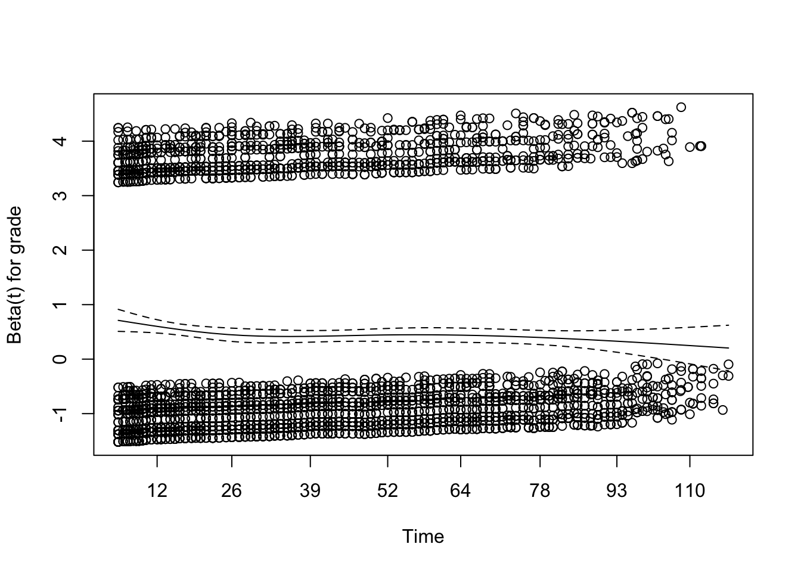
Figure 14.10: Schoenfeld residuals over time (grade)
In Figure 14.10 the line is not straight implying non-proportionality in the form of a declining hazard ratio over time.
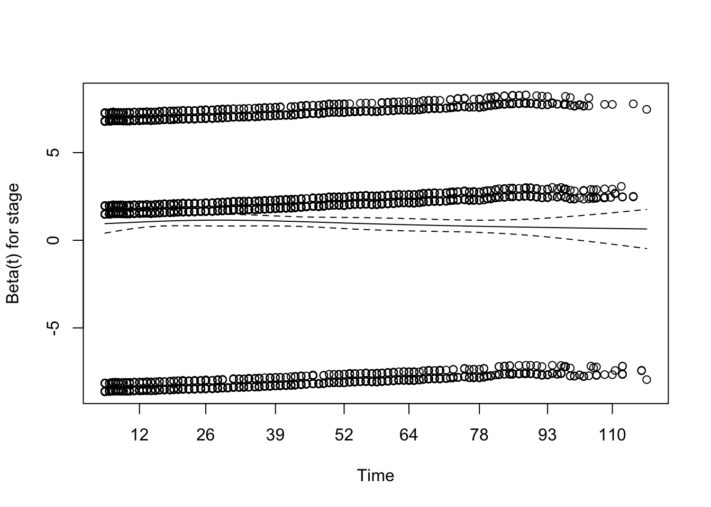
Figure 14.11: Schoenfeld residuals over time (stage)
In Figure 14.11 the line is not perfectly straight but close to although it has a somewhat declining hazard ratio over time.
14.4 Competing risks analysis
We know that the risk of death increases for a patient with a poor grade for both cancer and other causes of death. But does this effect differ? Using competing risk analysis we can determine whether there is a difference and what the difference in the effect the grade of the cancer has on the hazard of death from prostate cancer and other causes of death.
We will do this using the method by Putter et al. (reference) which is implemented in the comprisk package in R. This begins by setting up a transition matrix.
to
from event-free prostate other
event-free NA 1 2
prostate NA NA NA
other NA NA NA
Using the function msprep we can create a new data set that is suitable for competing risk analysis. This new data set, its 10 first rows seen in the table below, has twice as many rows as the original data. The first column, id, refering to the patient number is repeated twice. The column trans indicates the cause of death; “1” refers to death from prostate cancer and “2” refers to death from other causes. The column time is the time to the event or censoring, and the column status indicates whether the event was observed or censored. The columns grade, ageGroup, and stage are repeated for each cause of death. .
First ten rows of the new data
id
from
to
trans
Tstart
Tstop
time
status
grade
ageGroup
stage
1
1
2
1
0
18
18
0
mode
80+
T1c
1
1
3
2
0
18
18
0
mode
80+
T1c
2
1
2
1
0
23
23
0
mode
75-79
T1ab
2
1
3
2
0
23
23
0
mode
75-79
T1ab
3
1
2
1
0
37
37
0
poor
75-79
T1c
3
1
3
2
0
37
37
0
poor
75-79
T1c
4
1
2
1
0
27
27
0
mode
70-74
T2
4
1
3
2
0
27
27
0
mode
70-74
T2
5
1
2
1
0
42
42
0
mode
70-74
T1c
5
1
3
2
0
42
42
0
mode
70-74
T1c
The dataset set contains 28588 rows, twice as many as the original data
We will now be able to look at the hazard of death from prostate cancer while treating the other causes as censored and vice versa. We can now obtain estimates of the effects of our variables of interest on prostate-specific and other death causes.
We begin with looking at the effect of grade, age group, and stage on the hazard of death from prostate cancer.
Competing risk analysis 1, other causes of death treated as censored
Variable
Coefficient
exp.coef.
Std..Error
P.Value
gradepoor
1.422
4.146
0.072
0.000
ageGroup70-74
0.182
1.199
0.202
0.369
ageGroup75-79
0.822
2.275
0.184
0.000
ageGroup80+
1.219
3.385
0.179
0.000
stageT1c
-0.280
0.756
0.102
0.006
stageT2
0.128
1.137
0.089
0.150
The table shows the estimates of the effect of grade, age group, and stage on the hazard of death from prostate cancer. The hazard of death from prostate cancer increases for patients with a poor grade.
Now, let’s look at the effect of grade, age group, and stage on the hazard of death from other causes.
Competing risk analysis 2, prostate cancer treated as censored
Variable
Coefficient
exp.coef.
Std..Error
P.Value
gradepoor
0.187
1.206
0.041
0.000
ageGroup70-74
0.204
1.226
0.084
0.015
ageGroup75-79
0.501
1.651
0.079
0.000
ageGroup80+
0.993
2.699
0.076
0.000
stageT1c
-0.485
0.615
0.046
0.000
stageT2
-0.220
0.802
0.042
0.000
In this table, we see the estimates of the effect of grade, age group, and stage on the hazard of death from other causes. The hazard of death from other causes increases for patients with a poor grade but the exp coef is much smaller than that of prostate cancer. The question is then, is there a difference in this effect? Let’s test this using Putter et al.’s method.
Competing risk analysis 3, using Putter et al.'s method
Variable
Coefficient
exp.coef.
Std..Error
P.Value
gradepoor
2.748
15.616
0.148
0.00
trans
NA
NA
0.000
NA
ageGroup70-74
0.199
1.220
0.078
0.01
ageGroup75-79
0.555
1.742
0.072
0.00
ageGroup80+
1.028
2.795
0.070
0.00
stageT1c
-0.452
0.636
0.042
0.00
stageT2
-0.156
0.856
0.037
0.00
gradepoor:trans
-1.285
0.277
0.082
0.00
This last table shows the estimates of the competing risk analysis using Putter et al.’s method. Of main interest is to look at the interaction between grade poor and trans. This interaction term estimates the difference between the effect on prostate cancer death and death from other causes. The estimate is highly significant and represents the additional effect poor grade has on the risk of death from other causes relative to its effect on the risk of prostate cancer death. The hazard of death fro other causes is is 0.27 times the hazard of death from prostate cancer.
To conclude, this analysis has shown that a poor grade of prostate cancer strongly affects the risk of dying from prostate cancer. This effect is also much stronger on the risk of dying from prostate cancer than from other causes. The analysis also shows that the risk of dying from other causes is higher for older patients and for patients with more advanced stages of prostate cancer.